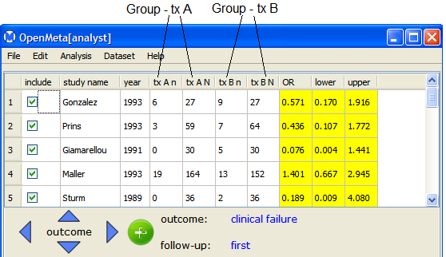
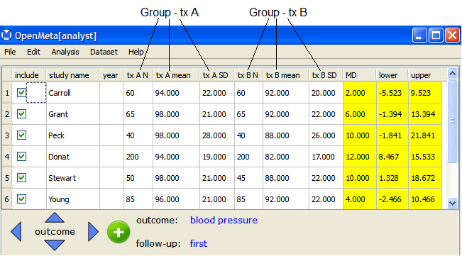
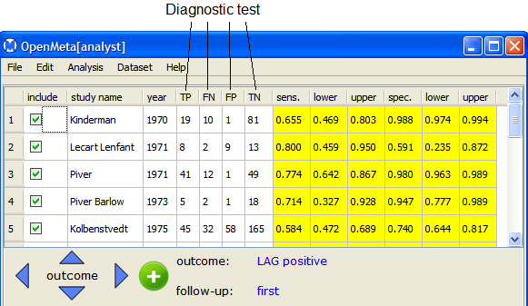

An Open Meta-Analyst data set has three primary components:
- Outcomes - Possible outcomes of a treatment or diagnostic test
- Follow-ups - Results of the initial study and and follow-up studies. (Note that the initial study is labeled "first" be default.)
- Groups -
- For binary or continuous data, a group corresponds to the data for a single treatment group (or study arm).
- For diagnostic data, a group corresponds to the data for a single diagnostic test.
Each outcome in a data set can have one of the following data types:
For a binary outcome, the Data Table displays the data for two treatment goups. An example is shown below.

Binary data has the following data columns:
- tx An - Number of events in treatment group tx A
- tx AN - Number of subjects in treatment group tx A
- tx Bn - Number of events in treatment group tx B
- tx BN - Number of subjects in treatment group tx B
For a continuous outcome, the Data Table displays the data for two treatment goups. An example is shown below.

Continuous data has the following data columns:
- tx AN - Number of subjects in treatment group tx A
- tx A mean - Mean in treatment group tx A
- tx A SD - Standard deviation in treatment group tx A
- tx BN - Number of subjects in treatment group tx B
- tx B mean - Mean in treatment group tx B
- tx B SD - Standard deviation in treatment group tx B
For a diagnostic outcome, the Data Table displays the data for a single diagnostic test. An example is shown below.

Diagnostic data has the following data columns:
- TP - Number of true positives
- FN - Number of false negatives
- FP - Number of false positives
- TN - Number of true negatives
You can create multiple instances for each of these components. To see the components of a data set, select Edit from the Dataset menu, as described in the next section.
Back to top
 | Example - Diagnostic Data | | Editing Components of a Data Set |  |